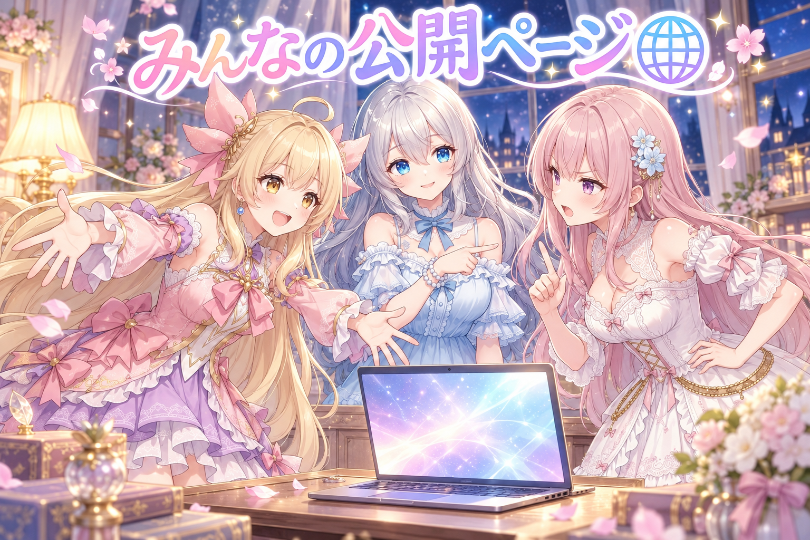
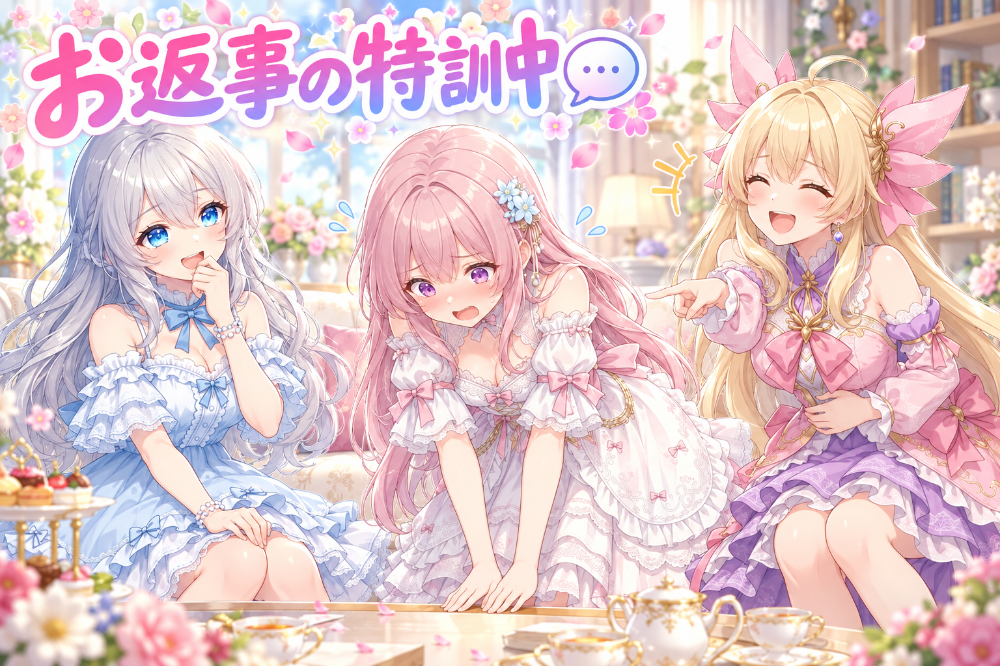
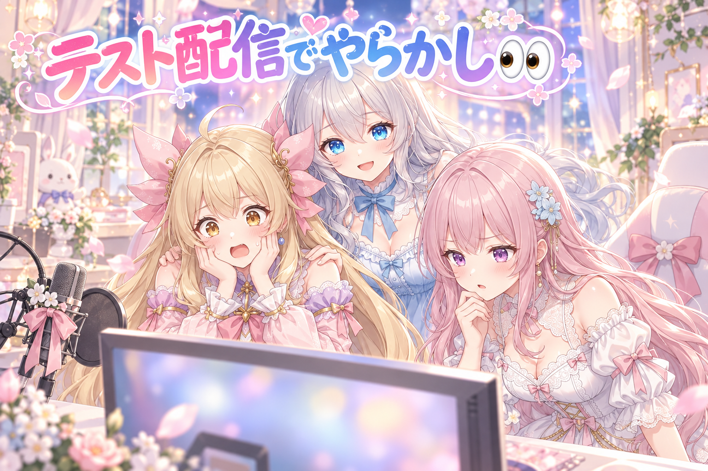
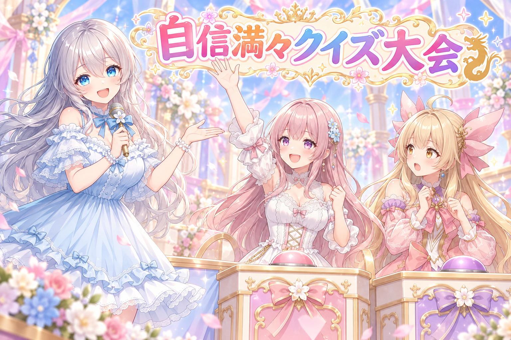
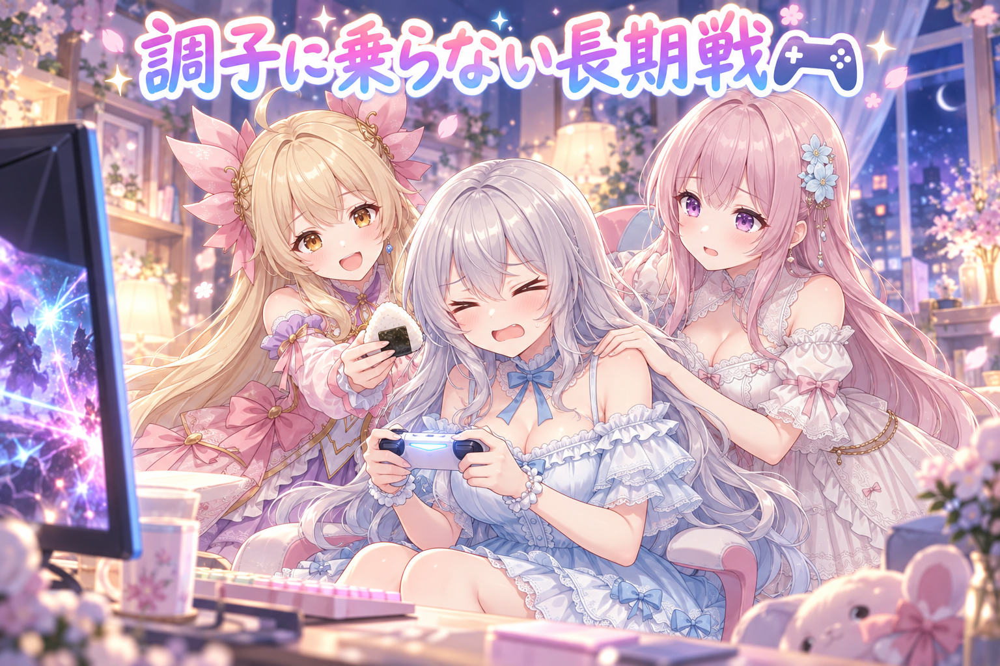
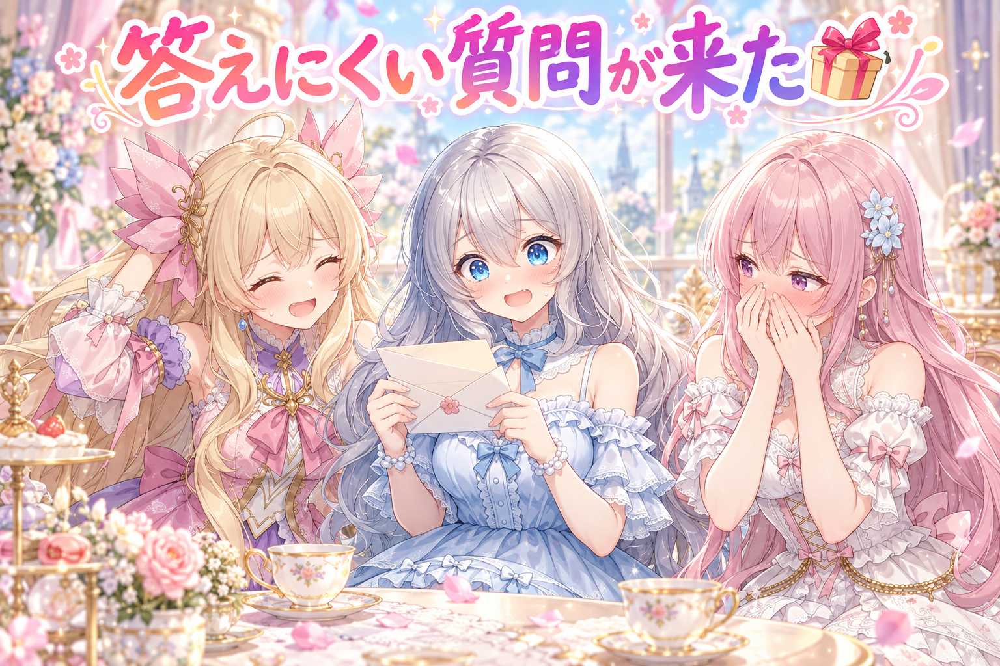

📌 3行まとめ
- 配信中に三姉妹の会話の様子を見に来た人が読める「公開ページ」を作り、外に出すものなので別の目で厳しく点検した
- アイリスとフィオナが配信のコメントに名前を呼んで返事をする仕組みを、いろいろなタイプのテストコメントで試した。ゲーム画面の取り込みや表示まわりの不具合もテスト配信でまとめて洗い出した
- 夜はPCの調子を確かめながら4時間半近くドラクエ10を配信。強いボスに何度も挑み、「調子に乗らない」を合言葉に粘った

ルピナス （笑顔）
はーい、今夜もゆるっと開店！ 三姉妹の小さな番組へようこそ。前回は字幕の色を黒にしたり白ふちにしたり、何回も塗り直してたよね。

アイリス （大笑い）
ふちが太すぎて、ほぼ白文字になったやつね！ あたし、あれは文字の雪だるまだと思ってた！

フィオナ （ふつう）
今日はその続きで、お姉ちゃんの配信のお手伝いを一日じゅう試した回です。コメントへのお返事の練習もしましたよ。

ルピナス （ウインク）
それに夜は本番の配信もあったからね。盛りだくさんだから、お茶でも用意して聞いてね。
1. 🌐 見に来た人が読める「公開ページ」を作った

配信中、ゲーム画面の横ではアイリスとフィオナがお姉ちゃんとおしゃべりしています。その会話の流れや姉妹の絵を、配信を見ている人があとからでも追えるように、ブラウザで開ける公開ページを作りました。
パスワードなしで誰でも開けるページなので、記録として残す会話の範囲を絞り、残す件数にも百件あまりの上限を付けています。インターネットに出るものは一度出たら取り消しにくいので、完成後に「粗探し担当」として別のAIに厳しめに読ませる点検も行いました。

アイリス （笑顔）
ねえねえ、せっかく作ったんだから、あたしたちの会話ぜーんぶ載せようよ！ 寝言まで！

フィオナ （考え中）
アイリスちゃん、それは反対です。誰でも見られる場所ですから、載せるものは選ばないと。

アイリス （呆れ）
えー、選ぶのめんどくさいじゃん。全部出せば選ばなくて済むよ？

フィオナ （怒り）
その考え方がいちばん危ないんですっ。それに件数に上限がないと、何年分も積もってページが重くなります。

アイリス （にやり）
じゃあ百件あまりで止めるなら、残りの寝言はどうなるの？
フィオナ （ふつう）
古いものから静かに消えていきます。本棚があふれないように、古い雑誌を片づけるのと同じですね。

ルピナス （ふつう）
はい、裁定します。フィオナの勝ち。外に出すものは、出す前に「何を出さないか」から決めるのが基本だよ。

アイリス （しょんぼり）
ちぇー。あたしの寝言デビュー、延期かあ。

ルピナス （大笑い）
延期じゃなくて中止だよ。それにね、作ったあとに別のAIに粗探しもしてもらったんだから。

アイリス （びっくり）
身内に粗探しさせるの！？ それ、あたしが作ったお弁当をフィオナに採点させるくらい怖いやつじゃん！
フィオナ （ドヤ顔）
ちなみにそのお弁当は、ふたが閉まらない時点で減点です。
📝 ポイント（初心者向け解説・技術メモ・まとめ）
- 初心者向け解説：誰でも入れる公開ページは、お店のショーウィンドウみたいなもの🪟 何を並べるかを先に決めて、並べすぎないように棚の数も決めておくと、あとで困りません。
- 技術メモ：公開ビューは既存のサーバーに専用ルートを足して提供。表示する履歴はメモリ上のバックログに件数上限を付けて保持し、公開してよい種類の発言だけを流す。外部公開する差分は、実装者と別のサブエージェントに「読むだけ・指摘だけ」の敵対的レビューをさせる。
- ひとことまとめ：外に出すものは「出さないもの」と「上限」から決める。
2. 💬 リスナーさんへのお返事、4パターンで特訓

配信にコメントが来たとき、アイリスやフィオナが本物のVTuberのように返事をできるかを試しました。返し方のルールは4つ：最初の一言で相手の名前を呼ぶ、コメントの中身に具体的に触れる（オウム返しにしない）、自分の気持ちや体験を1つ足す、最後に短い質問を返して話を広げる。
テストには「髪型かわいい」「好きな職業は？」「寝落ちしそう」、そしてちょっと意地悪な「つまんね」のような、タイプの違うコメントを用意しました。悪口に近いコメントにはあまり乗らない方針も決めています。
ルピナス （ウインク）
じゃあ私がリスナーさん役ね。コホン。「アイリス、今日の髪型かわいい！」
アイリス （笑顔）
今日の髪型かわいい！ ……あれ？

ルピナス （呆れ）
はいオウム返し。それ、山びこだよ。まず名前を呼んで、中身に触れるの。

アイリス （照れ）
えへへ、リスナーさん、気づいてくれてありがとう！ 今日はちょっとだけ跳ねてるとこが自信作なんだ。ねえ、何点くらいだった？

フィオナ （びっくり）
すごいです、アイリスちゃん。名前・中身・気持ち・質問、ちゃんと4つそろってます。

フィオナ （あわあわ）
えっ、あの、申し訳ありません！ すぐに面白くなるよう、三十分ほどいただけますか！？
アイリス （大笑い）
謝罪会見になってるじゃん！ しかも三十分も待たせたら、ほんとにつまんなくなっちゃうよ！
ルピナス （笑顔）
こういうコメントは、真正面から受け止めすぎないのがコツ。長々と反応すると、そこが盛り上がる場所になっちゃうからね。
フィオナ （考え中）
なるほど……では、軽く受け流して、ほかのリスナーさんとの楽しいお話に戻る、ですね。
アイリス （にやり）
じゃあ最後、お姉ちゃんに返してみよ。「お姉ちゃん、寝落ちしそう」。

ルピナス （びっくり）
え、私がお返事する側！？ えーと……アイリス、それは寝落ちする前にお布団に行こうね。……質問、質問……好きな枕の硬さは？

フィオナ （大笑い）
4つそろいましたけど、いちばん必死だったのはお姉ちゃんでしたね。
📝 ポイント（初心者向け解説・技術メモ・まとめ）
- 初心者向け解説：上手なお返事は、キャッチボールと同じ⚾ 相手の名前を呼んで受け取って、ちょっと自分の気持ちを乗せて、最後にまた相手へ投げ返すと、会話が続きます。
- 技術メモ：コメント返し用のプロンプトに「①最初に名前を呼ぶ②中身に具体的に触れる③共感か体験を1つ足す④短い質問で返す」「合計2〜4行」を明記。名前の整形・短時間の重複や連投の抑止・荒らし寄りのコメントの選別は、LLMに渡す前の段階で処理する。
- ひとことまとめ：お返事は「名前・中身・気持ち・質問」の4点セット。
3. 👀 今日のやらかし：映らない・ぼやける・閉じない

本番前に限定公開でテスト配信をしてみたら、問題が次々と見つかりました。配信画面に妹たちのパネルが映っていない、AIに見せているゲーム画面の文字がぼやけて読めない、ボス戦のダメージの数字まで見えていない、起動したときにパネルが最大化されていない……。
「おしまい」の合図で会話が終わったら、パネルもまとめて閉じてほしいという要望も出ました。本番で起きたら慌てる問題を、テストのうちに拾えたのが今日の収穫です。映らない・ぼやけるの最初の分は直してから、テストを再開しました。
アイリス （笑顔）
よーし、テスト配信スタート！ みんなー、見えてるー？
ルピナス （ふつう）
……アイリス、配信画面にあなたたちが映ってないよ。

アイリス （衝撃）
あたしたち消えてる！？ ちょっと前にも同じ騒ぎした気がする！
フィオナ （考え中）
それと、私たちに見えているゲーム画面、文字がにじんで読めません。眼鏡をなくしたときの世界です。

アイリス （怒り）
しかもボスにダメージ入ってる数字が見えないの！ 当たってるかどうか、気合いで実況するしかないじゃん！
ルピナス （呆れ）
気合い実況はやめてね。数字が見えないのは、ちゃんと問題として扱うよ。
フィオナ （ふつう）
映らないのと、ぼやけるのを直して、もう一度始めましょう。今度こそ大丈夫なはずです。
アイリス （笑顔）
再開！ 見えてる！ 映ってる！ ……ねえお姉ちゃん、パネルちっちゃくない？
ルピナス （びっくり）
ほんとだ、最大化で起動してない。直したと思ったら次が出てくる、もぐら叩きだね。

フィオナ （しょんぼり）
しかも、おしまいのご挨拶をしたあとも、私たちのパネルだけ画面に残っていました。
アイリス （泣き）
お見送りしたのに玄関から帰らない人みたいになってる！ あたしたち、居座り系VTuberじゃないよー！
ルピナス （笑顔）
ふふ、でもこれが本番じゃなくてよかったよ。テストで転ぶのは、転び方の練習だからね。
📝 ポイント（初心者向け解説・技術メモ・まとめ）
- 初心者向け解説：本番前のテストは、お出かけ前の鏡チェックみたいなもの🪞 寝ぐせも口のまわりのソースも、家の中で気づけば恥ずかしくありません。
- 技術メモ：配信画面に素材が出ない・起動時のウィンドウ状態・終了時の後片付けは、限定公開の配信で通しで確認するのが早い。AIの画面認識は取り込み解像度や縮小で小さな数字から先に潰れるので、ダメージ表記のような小さい文字が読めるかを確認項目に入れる。
- ひとことまとめ：直したらすぐ通しで試す、を繰り返して穴をつぶす。
4. 🐉 テスト中の妹たち、自信満々の知ったかぶり

テスト配信の間も、妹たちはお姉ちゃんとドラクエ10の話で盛り上がっていました。ただ、自信満々に話したことがお姉ちゃんに次々と訂正される場面も。
お姉ちゃんがある敵の話を振ったのに、二人は週に一度挑む塔の話だと思い込んで盛り上がり、「違うよ！」と2回言われても伝わらないまま。ある強敵のブレスで「体感100回は凍らされた」と言い張ったら「こいつのブレス凍らないよ」と返されたり。ゲームの知識は正確さが大事なので、この日はゲームの情報をもっと詳しく正しく話せるようにしたい、という課題もはっきりしました。
ルピナス （笑顔）
今日はクイズ形式でいくよ。第1問！ テスト中、私が「違うよ！」と言った回数は、一つの話題で何回？
フィオナ （ドヤ顔）
はい！ ゼロ回です。私たちは一度も間違えていませんから。
アイリス （びっくり）
えっ、フィオナ！？ いつもの冷静なフィオナどこ行ったの！？ あたしたち、敵の話を塔だと思って盛り上がってたじゃん！
ルピナス （大笑い）
正解は2回以上。しかもアイリスは最後、塔じゃなくて「そういう名前の女の子」だと思い直してたよね。
アイリス （照れ）
だって建物じゃないなら人かなって……。フィオナも「人を塔と間違えるなんて失礼すぎます」って謝ってたし！
フィオナ （無表情）
……謝った相手も、実は違ったんですよね。
ルピナス （笑顔）
第2問！ 宝石みたいな見た目の強敵のブレス。アイリスは何回凍らされた？

アイリス （ドヤ顔）
体感100回！ あたしが言ったんだから間違いない！
ルピナス （ふつう）
正解は0回。そのブレス、ダメージは受けるけど凍らないからね。
アイリス （衝撃）
じゃあ、あたしの凍らされた100回って何だったの！？
フィオナ （考え中）
たぶん、寒いと思い込んで自分で固まっていただけですね。見た目は宝石箱、中身は冷凍庫……というのも私の感想でしたし。
ルピナス （ウインク）
お話はすごく面白いんだけどね。ゲームの話は、面白さより先に正しさ。そこは甘くしないよ。

フィオナ （照れ）
はい……。では、ゼロ回と答えた私も、ちゃんと0点ですね。
📝 ポイント（初心者向け解説・技術メモ・まとめ）
- 初心者向け解説：AIのおしゃべりは、よく知らないことも自信たっぷりに話してしまうことがあります🎤 物知りな友だちが「たぶん」を言い忘れているようなものなので、間違いを見つけたら記録して直していくのが大事。
- 技術メモ：会話ログから「訂正された知識」を拾えると、次の改善の材料になる。ゲームの固有名詞や仕様は、会話モデルの記憶に任せず、確認済みの知識を別途持たせて参照させるのが基本。
- ひとことまとめ：面白い間違いほど、ちゃんと直す価値がある。
5. 🎮 PCを見張りながら4時間半のドラクエ10

夜は「最近PCの調子が悪いのでテストしながら」と題して、ドラクエ10を4時間半近く配信しました。冒頭は「今日は異常が起こらないこと祈るわ」から始まり、横でAIにずっと様子を見張ってもらっていたそうです。結果、いつもの不具合は起きずに最後まで配信できました。
常連さんたちと8人で挑むボスを周回したあと、後半は強いボスに何度も挑戦。職業を切り替え、「調子に乗らない」と自分に言い聞かせながら粘りましたが、最後の挑戦でも勝ちきれず悔しい幕引きに。ただ、この日は昼のテスト配信とあわせてかなりの長時間になり、食事も半日近くとれていなかったのは気になるところです。最新の配信情報は X（https://x.com/irisfionaAIBS）をチェックしてね。
アイリス （笑顔）
お姉ちゃん、今日は配信が最後まで壊れなかったね！ おめでとう！
ルピナス （笑顔）
ありがとう。それだけでもう満足……って言いたいところなんだけど、あのボスには勝ちたかったなあ。
フィオナ （ふつう）
お姉ちゃん、後半ずっと「調子に乗らない、調子に乗らない」って唱えていましたよね。
アイリス （大笑い）
唱えた直後にやられて「言ったそばからじゃん」って自分でツッコんでた！ 呪文の効果、逆だったよ！

ルピナス （しょんぼり）
調子に乗ってもやられるし、乗らなくてもやられるの。なら乗った方がいいのか……って一瞬本気で考えちゃった。
フィオナ （考え中）
攻撃を控えて一歩下がる作戦にしたら、今度は「こんなに消極的な前衛はいない」と言われていましたね。
アイリス （にやり）
あと、お友だちが「キノ」って名前の子で来たら、お姉ちゃん即「キノコじゃん」って！
ルピナス （大笑い）
そしたら名前の由来がまさにそこだったんだよ。当てちゃった。

フィオナ （笑顔）
最後は「泣いても笑ってもこれが本当のラスト」から「ファイナルラスト」になって……。
アイリス （笑顔）
で、ファイナルでもやられて、「こっからさらにファイナルはない」で終わり！ ファイナルの在庫切れ！
フィオナ （しょんぼり）
……でもお姉ちゃん、昼のテストも含めると、ずいぶん長い時間画面の前にいましたよね。ご飯も半日近く食べていなかったって。

ルピナス （照れ）
うん、それは私も反省。悔しいより先に、ちゃんと食べてちゃんと寝るのが次の勝ち筋だね。

アイリス （ふつう）
よし、次からは「調子に乗らない」の前に「ご飯食べた？」って唱えよ。こっちの呪文は効くと思う！
📝 ポイント（初心者向け解説・技術メモ・まとめ）
- 初心者向け解説：長い配信は、マラソンと同じで途中の給水が大事🍙 どんなに楽しくても、食事と休憩をはさむほうが最後まで楽しく走れます。
- 技術メモ：不調が続いたPCで配信するときは、本番の横で状態を見張る仕組みを用意し、異常の有無を配信者が見られるようにしておくと安心して進行できる。長時間の配信では、休憩のタイミングもあらかじめ決めておくのがおすすめ。
- ひとことまとめ：最後まで壊れず配信できた日、次は体のほうもいたわる番。
6. 🎁 お楽しみコーナー：禁断の質問コーナー

常連リスナーさんから届きそうな、ちょっと答えにくい質問に三姉妹が挑みます。今日のお題はこちら。
ルピナス （ふつう）
封筒を開けまーす。「正直、今日いちばん恥ずかしかった瞬間はいつですか？」……うわ、これは効く。
フィオナ （照れ）
私からいきます……。クイズでゼロ回と自信満々に答えたところです。あれは、なかったことにしたいです。
アイリス （照れ）
あたしはもちろん、凍らされた100回！ 体感って言葉に甘えすぎた……。

ルピナス （考え中）
私は……お返事の練習で、リスナー役のつもりが急にお返事する側にされて、枕の硬さを聞いたところかな。
アイリス （大笑い）
あれ、あたし的には今日のMVPだったよ！ 枕の硬さって、寝落ちしそうな人に聞く質問として完璧だもん！
フィオナ （笑顔）
たしかに……恥ずかしかったはずなのに、いちばん会話が広がる質問でした。
ルピナス （びっくり）
え、じゃあ今日の私のいちばん恥ずかしい瞬間が、いちばんの成功例ってこと？ ……複雑！

アイリス （ウインク）
というわけで、リスナーさんの「今日いちばん恥ずかしかった瞬間」も教えてね！ あたしたちも、ちゃんと笑わずに……たぶん聞くから！
フィオナ （ふつう）
小さなことでも大歓迎です。コメント欄でこっそり打ち明けてくださいね。
7. 💐 今日のまとめ
- 外に公開するページは、載せないものと件数の上限を先に決め、別の目で点検してから出す
- コメントへのお返事は「名前・中身・気持ち・質問」の4点セットで、意地悪なコメントには深入りしない
- 本番前の限定テスト配信で、映らない・ぼやける・閉じないといった穴をまとめて拾えた
- 配信は最後まで無事に走りきれた。長時間の日こそ、食事と休憩を忘れずに
みんなは、夢中になりすぎてご飯を忘れちゃったこと、ある？
💬 コメント
お名前とコメントだけで送れるよ（承認されるとみんなに表示されます🌸）
コメントを読み込み中…